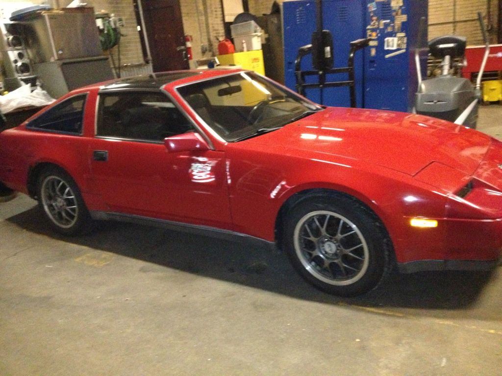

-
My 88 n/a auto is registered/inspected and just about ready for DD status. Car has a rebuilt auto with less than 12K miles on it -but- it was rebuilt about 10 years ago and sat for nearly 8 maybe more. Car shifts pretty good but has a slight flutter in the 1-2 shift. Otherwise fluid is brand new looking, smelling and everything else is fine.
My opinions of 'murican cars with high mileage autos is to never, ever change the fluid. Something in that dark sludgy metallic mix holds it all together and I have seen many a domestic auto go south immediately after a fluid & filter change. I have heard (on here maybe?) the clutches dry out when they sit for years and it can shorten the auto lifespan.
So should I? Will it be the nail in the coffin or do they respond well to this? I've got a kit and a box of Redline ready to go. I was also going to add a tranny cooler too, heat is the enemy.
and yes, I will be doing a manual swap eventually. Just have to hook up with Gardner and pick up some 71C's when I have a day off (like never). And finding a manual 2+2 driveshaft is like finding a fucking unicorn horn .......for whatever bizarre reasons I have yet to understand

-
I had a few n/a autos. The flutter 1-2 shift is normal. Unless your pulling a trailer a trans cooler is not needed. I also ran a n/a auto with cams & headers and it held fine.Black 1986 300zx Turbo coupe (Chuki)
http://z31performance.com/showthread…86-Turbo-Coupe
----------------------------------------------------------------------------------------------------------------
Pewter 1986 300zx N/A 2 Turbo 2+2 (Chuki)
http://z31performance.com/showthread…9;s-1986-300zx -
If fluid is clean etc, then no issues changing the fluid etc. A trans cooler is never a bad idea though ones with thermostatic valves are best.Hmmm, Whats next?
Full Size Bronco, smashing shit.
84ZXT -
PO changed the trans oil before selling the car off to me, and it never really had any issues. I can say I did have that stutter going from 1st to 2nd too though, so you should be fine with the fluid you have.
2001 Mazda Miata LS
also a 1989 Nissan 240SX
50th AE Build Thread SOLD 2015

Copyright © 2006–. All rights reserved. Privacy Policy